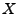
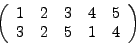
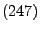
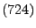
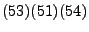
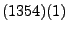
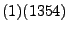
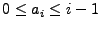
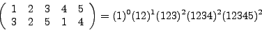
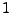

Permutation Representation
Permutation Representation
Time-Limit: 5 second(s)
A permutation is a bijection from a set  onto itself. If is finite, the elements of
are often numbered 1,2,3,...n.
A permutation of a set with five
elements is often denoted by

meaning the element 1 is mapped to the element 3 of the set, the element 2 is mapped to
the element 2 and so on and so forth. Another way of denoting permutations is to
use cycle notation. Cycle notation is not necessarily unique. The following cycle

means that the element 2 is mapped to the element 4, the element 4 is mapped to the
element 7 and the element 7 is mapped to the element 2. The cycle above could also be
written

The product of several cycles is evaluated from right to left. The above permutation can be written as



A permutation can be written uniquely as the product of cylces
if
 holds for each exponent ai. The example permutation can be uniquely written as

Your task is to compute the
ai's of a given permutation.
Input
The input consists of several test cases. Each test case consists of three lines.
The first line contains the number n, 1 ≤ n ≤ 200000.
The second line contains the elements from  to  .
The third line contains a mapping for every element from the second line.
.
The third line contains a mapping for every element from the second line.
Output
For each test case there should be one line of output. Print all the ai's on a single
line separated by one space in the order a1...an
Sample Input
5
1 2 3 4 5
3 2 5 1 4
4
1 2 3 4
3 4 1 2
Sample Output
0 1 2 2 2
0 0 0 2